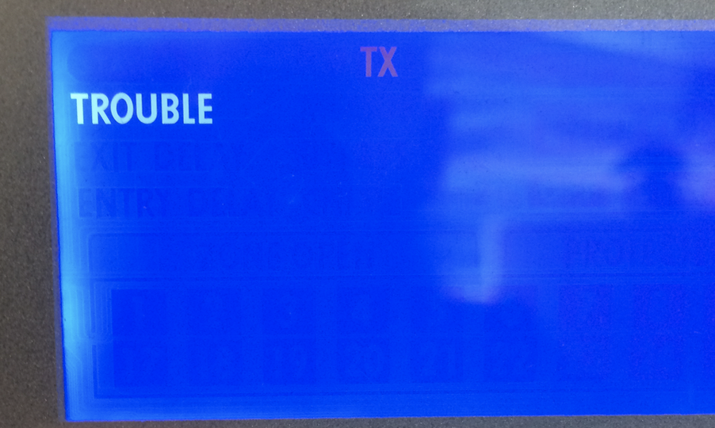

BSides CBR 2019-03-15
I'm not talking about an IoT "Smart Alarm"
I won't name the vendor or product
Not really an "SDR" talk, radio is just the transport
No live demo :(
Security systems are interesting
Let's look at an alarm
Fixed-code systems are boring
Let's look at something that's (hopefully) not entirely crap
Black-box approach
Manufactured (or just assembled/packaged?) in North America
Australian importer/distributor
Alarm monitoring providers as resellers (also Amazon retailers, ofc)
Small business/prosumer, not "secure site"
I notice the keypads in retail, small offices
Central unit in a lockable cabinet, siren, phone line, GSM/3G
Arm/disarm, status display, end-user management
Motion, door/window, smoke, glassbreak, siren
2-way comms (remote units are Tx/Rx)
Remote units require enrollment
"RF Jamming Detection" ("TROUBLE!")
ISM/LIPD 433MHz and 868MHz (!)
Sounds reasonable, perhaps I won't get anywhere interesting without RE-ing the firmware.
433.9MHz PWM ASK, 200µs/5kBd sub-symbol, 600µs/1.66kBd symbol
Preamble: 4 on, 13 cycles of off/on, 2 off, 6 on, 2 off
Data: 4 or 8 bytes of data ( 1=on/on/off, 0=on/off/off )
Trailer: 1 final pulse on
Preamble is not valid packet data
Remotes just send if they've got something to say
Console sends ~0.1s of on/off as a wakeup when it wants (possibly battery-powered) remotes to pay attention
No fixed prefix in data payload: no sync word? (but the preamble has a well-defined end)
luaradio bodge to capture on-air data (including signal strength), dump as json, then I can process/mangle with jq:
{
"timestamp":1535333985.1992,
"raw_payload":"1111010101010101010101010101010011111100 ...110...100... 1",
"signal_strength":0.19165825719635,
"payload":"...1...0..."
}
Some common prefixes in payload, but too many to make sense as target address
Small changes in payload function result in bit changes throughout payload data: no obvious command/address fields (eg: person A arm vs. disarm, or person A arm vs. person B arm)
Not encrypted, but not enough data to identify command/data structure
I observed 35 distinct data packets across a month of data collection
Perhaps this system isn't as good as I'd hoped. :(
Every ~4 minutes there's a wakeup, then a sequence of 8 packets taking ~2 seconds in total:
{"t":"08:56:25","p3":"_WAKEUP_","a":"console","n":"WAKEUP"}
{"t":"08:56:25","p3":"f1d80212","a":"console","n":"keepalive 1 ?"}
{"t":"08:56:26","p3":"b5908232","a":"console","n":"keepalive 2 ?"}
{"t":"08:56:26","p3":"b19a4236","a":"console","n":"keepalive 3 ?"}
{"t":"08:56:26","p3":"f5d2c216","a":"console","n":"keepalive 4 ?"}
{"t":"08:56:26","p3":"bdd122ca","a":"console","n":"keepalive 5 ?"}
{"t":"08:56:27","p3":"9df0a2c0","a":"console","n":"keepalive 6 ?"}
{"t":"08:56:27","p3":"b5f262c2","a":"console","n":"keepalive 7 ?"}
{"t":"08:56:27","p3":"95d3e2c8","a":"console","n":"keepalive 8 ?"}
{"t":"09:00:25","p3":"_WAKEUP_","a":"console","n":"WAKEUP"}
{"t":"09:00:26","p3":"f1d80212","a":"console","n":"keepalive 1 ?"}
{"t":"09:00:26","p3":"b5908232","a":"console","n":"keepalive 2 ?"}
{"t":"09:00:26","p3":"b19a4236","a":"console","n":"keepalive 3 ?"}
{"t":"09:00:27","p3":"f5d2c216","a":"console","n":"keepalive 4 ?"}
{"t":"09:00:27","p3":"bdd122ca","a":"console","n":"keepalive 5 ?"}
{"t":"09:00:27","p3":"9df0a2c0","a":"console","n":"keepalive 6 ?"}
{"t":"09:00:27","p3":"b5f262c2","a":"console","n":"keepalive 7 ?"}
{"t":"09:00:28","p3":"95d3e2c8","a":"console","n":"keepalive 8 ?"}
Every ~25 minutes the keypad transmits once and then gets some ACKs from the console:
{"t":"04:40:07","p3":"5d18faef","a":"keypad1","n":"? keypad keepalive ?"}
{"t":"04:40:07","p3":"7970ef6b","a":"console","n":"ack to keypad1 ?"}
{"t":"04:40:07","p3":"7970ef6b","a":"console","n":"ack to keypad1 ?"}
{"t":"05:05:32","p3":"5d18faef","a":"keypad1","n":"? keypad keepalive ?"}
{"t":"05:05:32","p3":"7970ef6b","a":"console","n":"ack to keypad1 ?"}
{"t":"05:05:32","p3":"7970ef6b","a":"console","n":"ack to keypad1 ?"}
Every ~20-40 minutes the sensor sends a series of constant packets:
{"t":"08:12:17","p3":"cc90fbe0","a":"sensor1","n":"? battery OK ?"}
{"t":"08:12:17","p3":"cc90fbe0","a":"sensor1","n":"? battery OK ?"}
{"t":"08:12:18","p3":"cc90fbe0","a":"sensor1","n":"? battery OK ?"}
{"t":"08:12:18","p3":"cc90fbe0","a":"sensor1","n":"? battery OK ?"}
{"t":"08:12:18","p3":"cc90fbe0","a":"sensor1","n":"? battery OK ?"}
{"t":"08:12:19","p3":"cc90fbe0","a":"sensor1","n":"? battery OK ?"}
{"t":"08:12:19","p3":"cc90fbe0","a":"sensor1","n":"? battery OK ?"}
{"t":"08:12:20","p3":"cc90fbe0","a":"sensor1","n":"? battery OK ?"}
{"t":"08:31:50","p3":"cc90fbe0","a":"sensor1","n":"? battery OK ?"}
{"t":"08:31:51","p3":"cc90fbe0","a":"sensor1","n":"? battery OK ?"}
{"t":"08:31:51","p3":"cc90fbe0","a":"sensor1","n":"? battery OK ?"}
{"t":"08:31:52","p3":"cc90fbe0","a":"sensor1","n":"? battery OK ?"}
{"t":"08:31:52","p3":"cc90fbe0","a":"sensor1","n":"? battery OK ?"}
{"t":"08:31:53","p3":"cc90fbe0","a":"sensor1","n":"? battery OK ?"}
{"t":"08:31:53","p3":"cc90fbe0","a":"sensor1","n":"? battery OK ?"}
{"t":"08:31:53","p3":"cc90fbe0","a":"sensor1","n":"? battery OK ?"}
While there's motion, the motion sensor sends a stream of packets every ~0.5s:
{"t":"04:48:07","p3":"cc907b9a","a":"sensor1","n":"motion"}
{"t":"04:48:08","p3":"cc907b9a","a":"sensor1","n":"motion"}
{"t":"04:48:08","p3":"cc907b9a","a":"sensor1","n":"motion"}
{"t":"04:48:08","p3":"cc907b9a","a":"sensor1","n":"motion"}
{"t":"04:48:09","p3":"cc907b9a","a":"sensor1","n":"motion"}
{"t":"04:48:09","p3":"cc907b9a","a":"sensor1","n":"motion"}
{"t":"04:48:10","p3":"cc907b9a","a":"sensor1","n":"motion"}
{"t":"04:48:10","p3":"cc907b9a","a":"sensor1","n":"motion"}
{"t":"04:50:00","p3":"cc907b9a","a":"sensor1","n":"motion"}
{"t":"04:50:01","p3":"cc907b9a","a":"sensor1","n":"motion"}
{"t":"04:50:01","p3":"cc907b9a","a":"sensor1","n":"motion"}
{"t":"04:50:02","p3":"cc907b9a","a":"sensor1","n":"motion"}
{"t":"04:50:02","p3":"cc907b9a","a":"sensor1","n":"motion"}
{"t":"04:50:02","p3":"cc907b9a","a":"sensor1","n":"motion"}
{"t":"04:50:03","p3":"cc907b9a","a":"sensor1","n":"motion"}
{"t":"04:50:03","p3":"cc907b9a","a":"sensor1","n":"motion"}
{"t":"04:55:47","p3":"cc907b9a","a":"sensor1","n":"motion"}
{"t":"04:55:48","p3":"cc907b9a","a":"sensor1","n":"motion"}
{"t":"04:55:48","p3":"cc907b9a","a":"sensor1","n":"motion"}
{"t":"04:55:49","p3":"cc907b9a","a":"sensor1","n":"motion"}
{"t":"04:55:49","p3":"cc907b9a","a":"sensor1","n":"motion"}
{"t":"04:55:49","p3":"cc907b9a","a":"sensor1","n":"motion"}
{"t":"04:55:50","p3":"cc907b9a","a":"sensor1","n":"motion"}
{"t":"04:55:50","p3":"cc907b9a","a":"sensor1","n":"motion"}
{"t":"22:43:31","p3":"3d788a6f ","a":"keypad1","n":"? start arm/disarm sequence ?"}
{"t":"22:43:31","p3":"7970ef6b ","a":"console","n":"ack to keypad1 ?"}
{"t":"22:43:31","p3":"7970ef6b ","a":"console","n":"ack to keypad1 ?"}
{"t":"22:43:31","p3":"7d70f8bdaf7dfd6f","a":"console","n":"??"}
{"t":"22:43:31","p3":"5d3b6ae7 ","a":"keypad1","n":"? ack to console (arm/disarm, poweron) ?"}
{"t":"22:43:31","p3":"393058bde5547f6f","a":"keypad1","n":"??? early op, some arm, some disarm, User1 ???"}
{"t":"22:43:31","p3":"7d70f8bdaf7dfd6f","a":"console","n":"??"}
{"t":"22:43:31","p3":"7970ef6b ","a":"console","n":"ack to keypad1 ?"}
{"t":"22:43:32","p3":"753878ddbdfcffed","a":"console","n":"??"}
{"t":"22:43:32","p3":"5d3b6ae7 ","a":"keypad1","n":"? ack to console (arm/disarm, poweron) ?"}
(repeat x 3)
{"t":"22:43:32","p3":"7d1af8fdbffc7def","a":"console","n":null}
{"t":"22:43:32","p3":"5d3b6ae7 ","a":"keypad1","n":"? ack to console (arm/disarm, poweron) ?"}
(repeat x 1)
{"t":"22:43:33","p3":"753878ddbdfcffed","a":"console","n":null}
{"t":"22:43:33","p3":"5d3b6ae7 ","a":"keypad1","n":"? ack to console (arm/disarm, poweron) ?"}
(repeat x 1)
{"t":"22:43:33","p3":"5d3bf8d5bffcfde5","a":"console","n":null}
{"t":"22:43:33","p3":"5d3b6ae7 ","a":"keypad1","n":"? ack to console (arm/disarm, poweron) ?"}
(repeat x 1)
{"t":"22:43:34","p3":"753878ddbdfcffed","a":"console","n":null}
{"t":"22:43:34","p3":"5d3b6ae7 ","a":"keypad1","n":"? ack to console (arm/disarm, poweron) ?"}
(repeat x 1)
{"t":"22:43:40","p3":"3d7a78aeaf7dff6b","a":"console","n":null}
{"t":"22:43:40","p3":"5d3b6ae7 ","a":"keypad1","n":"? ack to console (arm/disarm, poweron) ?"}
(repeat x 1)
{"t":"22:43:43","p3":"753878ddbdfcffed","a":"console","n":null}
{"t":"22:43:43","p3":"5d3b6ae7 ","a":"keypad1","n":"? ack to console (arm/disarm, poweron) ?"}
(repeat x 1)
Disarms are repeatable enough that I should be able to synthesise one. Simple, yeah?
Collect a disarm
Pretend I'm the keypad
Spit pre-cooked packets at the console
Win!
No win :(
I couldn't make this work. Why not?
Attribution to keypad/console isn't right?
Possible I guess?
I'm missing some other communication channel?
Don't think so: couldn't find anything else in 433/868/902 or .au LIPD 915-928
Interference from the real keypad trying to join the conversation
Gets logged
Alarm monitoring company earns their keep
Someone gets a late-night phone call
Motion alert is a (per site? per sensor?) static packet
Reflexive jamming!
Watch for the distinctive start of one of these, when you see it jam until the end
Needs fast turnaround between detection and jamming
27ms packet, can identify in 12.8ms, need to turnaround in < 14.2ms
I guess I'm writing CC1111 firmware now :(
Assume different PIR sensors send different packets :(
Console heartbeat is every 4 minutes, like clockwork
Trivially detectable (static pattern every time)
What if we just jam everything whenever the watchdog isn't looking?
10 wait for heartbeat to complete 20 jam for 230 seconds, loot the joint 30 stand still 40 goto 10
And you get 3m50s to do whatever you like, stand still for 10 seconds, and off you go again. But TROUBLE?
(caveat: possible low-battery warnings for keypad/sensors)
Get a keypad (sorry Topaz 😢)
Move keypad out of range, relay comms
Dump keypad RAM/firmware, RE
You don't need to be a DSP guru, there's lots of stuff running over simple radio transports
Lots of it is pretty easy to mess with
Alarm owner doesn't care: their threat is junkies looking for crap to sell, not ninja hackers
Me
@rfc6919
github.com/rfc6919 <- sources will be here once I sanitize them
IRC: russm (#inspectrum, #hackrf, #rfcat, #kiwicon)
sdr-australia.slack.com (DM @sdr_melbourne for invite, or find Pam around the con)
Gqrx (http://gqrx.dk/)
Inspectrum (https://github.com/miek/inspectrum)
luaradio (http://luaradio.io/)
Pothos (http://www.pothosware.com/)